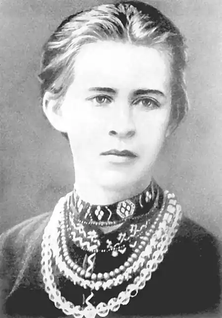
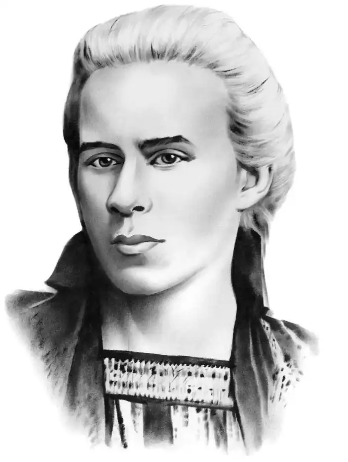
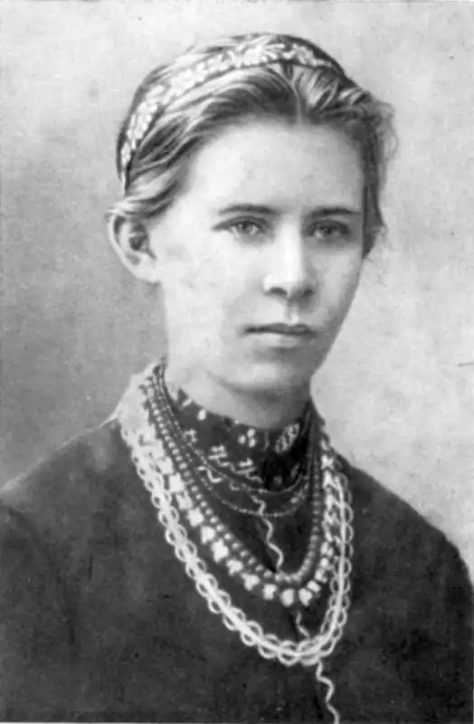
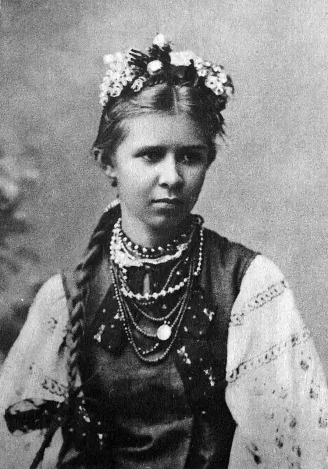
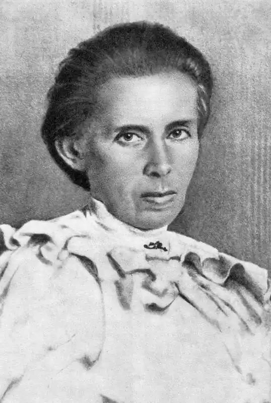

ЛЕСЯ УКРАЇНКА
(1871 — 1913)
Леся Українка (Лариса Петрівна Косач) народилася 25 лютого 1871р. у Новограді-Волинському. Мати її — письменниця Олена Пчілка — і батько — юрист — багато уваги приділяли гуманітарній освіті дітей, розвивали інтерес до літератури, вивчення мов, перекладацької роботи. Серед близького оточення майбутньої поетеси були відомі культурні діячі: М. Драгоманов (її дядько по матері), М. Старицький, М. Лисенко. Все це сприяло ранньому входженню Лесі в літературу: в дев'ять років вона вже писала вірші, у тринадцять почала друкуватись. У 1884р. у Львові в журналі "Зоря" було опубліковано два вірші ("Конвалія" і "Сафо"), під якими вперше з'явилось ім'я — Леся Українка. Дитячі роки поетеси минали на Поліссі. Взимку Косачі жили в Луцьку, а літом — у с. Колодяжне. Серед факторів, які впливали на формування таланту Лесі Українки, була музика. "Мені часом здається, — писала вона, — що з мене вийшов би далеко кращий музика, ніж поет, та тільки біда, що натура утяла мені кепський жарт". Цей "жарт" — початок туберкульозу, з яким вона боролась усе життя. Хвороба спричинилась до того, що дівчинка не ходила до школи, однак завдяки матері, а також М. Драгоманову, який мав великий вплив на духовний розвиток Лесі Українки, вона дістала глибоку і різнобічну освіту. Письменниця знала більше десяти мов, вітчизняну і світову літературу, історію, філософію. Так, наприклад, у 19 років вона написала для своєї сестри підручник "Стародавня історія східних народів". У 1879р. було заарештовано і вислано до Сибіру тітку Лесі Олену Косач, яка належала до київського гуртка "бунтарів", там же, в Карійській тюрмі, загинула мати її найближчої товаришки — Марія Ковалевська. Враження тих літ виявилися такими сильними й пам'ятними, що пізніше ожили у віршах "Віче", "Мати-невільниця", "Забуті слова", "Епілог". Ідеалом для поетеси стає герой, який, пробитий списом, шепоче: "Убий, не здамся!" З кінця 80-х рр. Леся Українка живе у Києві. На початку 1893р. у Львові виходить перша збірка поезій Лесі Українки — "На крилах пісень". Збірку відкриває цикл лірики "Сім струн", з якого постає образ "бездольної матері" України, що дістає свій розвиток у циклі "Сльози-перли". Два наступних цикли — "Подорож до моря" і "Кримські спогади" — привертають увагу не тільки любов'ю до рідної землі, красою пейзажних малюнків, а й плином рефлексій ліричного героя, думка якого раз по раз звертається до проблеми волі і неволі. Серед вміщених у збірці творів виділяється вірш "Contra spem spero", що сприймається як кредо молодої письменниці, декларація її незнищенного оптимізму. Та особливо гостро — як заклик і гасло — прозвучали у тогочасній суспільній атмосфері "Досвітні огні". 1892р. у Львові виходить "Книга пісень" Г. Гейне, де Лесі Українці належали 92 переклади. Вона перекладає також поезію в прозі І. Тургенева "Німфи", уривок з поеми А. Міцкевича "Конрад Валленрод", поетичні твори В. Гюго "Лагідні поети, співайте" і "Сірома", уривки з "Одіссеї" Гомера, індійські обрядові гімни із збірки "Ріг-Веди". Як перекладач Леся Українка додержує принципу змістової точності, уникає стилізації. Початок роботи Лесі Українки над прозовими жанрами пов'язаний з діяльністю гуртка київської літературної молоді "Плеяда". Тут готували видання для народу з історії, географії, перекладали твори російських та зарубіжних письменників; гуртківці писали і власні твори, які оцінювались на конкурсах. Так були написані і деякі оповідання Лесі Українки, присвячені переважно соціально-побутовим темам. Вони друкувалися в журналах "Зоря" ("Така її доля", "Святий вечір", "Весняні співи", "Жаль"), "Дзвінок" ("Метелик", "Біда навчить"). У 1894 — 1895 рр. Леся Українка перебувала в Болгарії у Драгоманова. У Болгарії була написана переважна частина циклу політичної лірики "Невільничі пісні". Поетеса говорить, що розстається з рожевими мріями, із скаргами на долю і сльозами та свідомо приймає свій терновий вінок. Вона відчуває в собі народження нової людини — як криці у вогні ("Північні думи", "О, знаю я, багато ще промчить"). Письменниця підтримує галицьку радикальну пресу, публікує у львівському журналі "Народ" статтю "Безпардонний патріотизм" та вірш-памфлет "Пророчий сон патріота", що є відгуком на проватіканські статті газети "Буковина". Це було нове явище в її творчості — сатира, спрямована проти українського буржуазного націоналізму та клерикалізму. Твори публікувались під криптонімом "Н. С. Ж.". З 1893р. вона перебуває під таємним наглядом, підтримує тісні зв'язки з особами, які були на засланні і багатьма студентами "сумнівної політичної благонадійності". У 1898р. у "Літературно-науковому віснику" з'являється стаття І. Франка про творчість Лесі Українки, в якій він ставить поетесу в один ряд з Шевченком. 1899р. у Львові виходить друга збірка поезій — "Думи і мрії". Сюди ввійшли цикли "Мелодії", "Невільничі пісні", "Відгуки", поеми "Давня казка" і "Роберт Брюс, король шотландський". Ця збірка засвідчила безсумнівний злет творчості молодої поетеси. В 1900р. в Петербурзі Леся Українка знайомиться з російськими літераторами, які групувались навколо журналу "Жизнь". Леся Українка вмістила в "Жизни" чотири статті: "Два направлення в новейшей итальянской литературе", "Малорусские писатели на Буковине", "Заметки о новейшей польской литературе", "Новые перспективы и старые тени". Підготована до друку стаття "Новейшая общественная драма" була заборонена цензурою, а дві інші — "Народничество в Германии" і "Михаэль Крамер. Последняя драма Гергарта Гауптмана" — не були опубліковані, бо 8 червня 1901р. журнал ліквідовано. Більшість своїх статей для "Жизни" Леся Українка писала в Мінську біля смертельно хворого С. Мержинського. В одну з найстрашніших ночей у стані невимовної туги створила вона драматичну поему "Одержима" (1901), в якій вибух інтимного почуття, викликаний нелюдськими стражданнями вмираючого товариша, спрямовується в широке русло вибору людиною життєвого шляху і тієї ідеї, якій вона служить увесь свій вік (ці питання звучать уже у вірші "Завжди терновий вінець...", написаному за кілька місяців до "Одержимої", і широко розроблені у драмі "Адвокат Мартіан", 1913). С. Мержинському присвячені також "Я бачила, як ти хиливсь додолу", "Мрія далекая, мрія минулая", "Калина" та інші вірші — цілий цикл інтимної лірики. Трагічні переживання поетеси відлунюються також у поемі "Віла-посестра". Пережита особиста драма позначилась на загостренні хвороби легень, і Леся Українка їде на Буковину, далі — Гуцульщину рятувати підірване здоров'я. В 1902р. у Чернівцях з ініціативи студентів університету, які тепло вітали поетесу, виходить третя збірка її поезій — "Відгуки". Вона складається з циклів "З невольницьких пісень", "Ритми", "Хвилини", шести легенд і драматичної поеми "Одержима". У 900-х рр. міцніють зв'язки Лесі Українки з соціал-демократичним рухом. З групою товаришів вона займається розповсюдженням соціалістичної і марксистської літератури, перекладом праць теоретиків соціалізму, виданням цих творів за кордоном і транспортуванням у Росію. У 1907р. при обшуку у Лесі Українки вилучено 121 брошуру, серед них були три видання "Маніфесту Комуністичної партії", три праці В І. Леніна ("До сільської бідноти", "Державна дума і соціал-демократична тактика", "Перемога кадетів і завдання робітничої партії"), чотири праці К. Маркса, п'ять — Ф. Енгельса, біографія К. Маркса і Ф. Енгельса та ін. Феномен таланту Лесі Українки полягав у тому, що вона одночасно плідно працювала в різних літературних жанрах. У кінці 90-х — на початку 900-х рр. з'являються її поеми "Одно слово", "Віла-посестра", "Се ви питаєте за тих", "Ізольда Білорука", в яких яскраво виявилася схильність до оригінальної обробки світових сюжетів. Активно працює Леся Українка і як перекладач, її увагу привертають вершинні явища світової літератури — "Макбет" Шекспіра, "Пекло" Данте, "Каїн" Байрона. Вона перекладає також драму Г. Гауптмана "Ткачі", яка належала до забороненої в Росії літератури, вірші Надсона, Конопніцької, Ади Негрі. З метою популяризації української літератури серед російського читача Леся Українка вибирає для перекладу твори на народні теми. Так, у видавництві "Донская речь" у Ростові-на-Дону в 1903 — 1905 рр. вийшли в її перекладах російською мовою оповідання І. Франка "Сам собі винен", "Добрий заробок", "На дні", "Ліси і пасовиська", "Історія кожуха", "До світла". Переклади Лесі Українки відзначаються високою мовною культурою, пильною увагою до відтворення ідейно-художнього змісту оригіналу, його стильових особливостей. Особливе місце у творчій біографії Лесі Українки займає фольклор. Починаючи з дитячих вражень (поема в народному дусі "Русалка") і кінчаючи останньою казкою "Про велета", він органічно входить у поетичний світ письменниці. Вона записує з уст селян обряди, пісні, думи, балади, казки. Вже на початку 90-х рр. Леся Українка друкує в "Житі і слові" підбірку "Купала на Волині". Широтою інтересів відзначається рукописний зошит пісень із с. Колодяжне, куди ввійшли веснянки, колядки, весільні, родинно-побутові, жниварські та ліричні пісні. Під час перебування в Карпатах поетеса записувала гуцульські мелодії; в 1903р. вона друкує збірник "Дитячі гри, пісні, казки". У 1904р. у неї виникає задум видати "Народні пісні до танцю" (54 тексти). Леся Українка стає ініціатором видання українського героїчного епосу, у 1908р. записує на фонографі думи у виконанні кобзаря з Харківщини Г. Гончаренка. 30 записів веснянок і обжинкових пісень з голосу Лесі Українки зробив композитор М. Лисенко. 225 пісень увійшли до книги "Народні мелодії. З голосу Лесі Українки", яку впорядкував і видав 1917р. К. Квітка. У 1908 — 1910 рр. стараннями поетеси була організована експедиція Ф. Колесси для записування народних дум на Полтавщині, й у 1910 — 1913 рр. у Львові вийшли два томи цих записів ("Мелодії українських народних дум"), які стали визначним явищем світової фольклористики. Через хворобу Лесі Українці доводилось багато їздити по світу. Вона лікувалася в Криму і на Кавказі, у Німеччині і Швейцарії, в Італії та Єгипті. І хоча чужина завжди викликала в неї тугу за рідним краєм, але й збагачувала новими враженнями, знанням життя інших народів, зміцнювала й поглиблювала інтернаціональні мотиви її творчості.